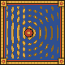
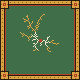
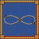

About
Lamplight pools on a desk buried in solvers and half-finished notebooks.
- Studying
- MSc Physics of Complex Systems, Paris-Saclay MSc Quantum Information, Sorbonne Université MSc Economics & Finance, Paris Dauphine-PSL
- Drawn to
-
- complex systems
- quantum information
- stochastic processes
- machine learning for physics
- agent-based and mean-field models
- quantitative finance
- Languages
- French · English · Portuguese · German
The book of courses
2026–2027
Université Paris-Saclay · MSc Physics of Complex Systems (M2), in progress
- Statistical Field Theory
- Stochastic Processes
- Nonlinear Physics and Dynamical Systems
- Computational Science
Sorbonne Université · MSc Quantum Information (M2), in progress
- Quantum Optics
- Quantum Algorithms
- Atomic Physics
- Quantum Cryptography
- Quantum Information Theory
Université Paris Dauphine-PSL · MSc Economics & Finance (M2), in progress
- Derivatives
- Portfolio Management
- Macroeconomics
- Time Series Econometrics
- Business Plans
2025–2026
Université Paris Cité · MSc Fundamental Physics (M1)
- Statistical Physics I & II
- Quantum Mechanics I & II
- Condensed Matter
- Subatomic Physics
- Computational Physics
- Advanced Quantum Physics
- Particle Physics
- Nonlinear Physics and Dynamical Systems
- Quantum Information
- Advanced Condensed Matter
- Research internship (IJCLab)
Université Paris Dauphine-PSL · BSc Economics & Finance (L3)
- Financial Products and Markets
- Portfolio Management
- Computing for Finance (Python, VBA)
- Mathematical Tools for Finance
- Mathematics for Economics
- Statistics
- Econometrics
- Microeconomics
- Macroeconomics
- Industrial Economics
- Advanced Accounting
- Insurance
- Technical Analysis
- English
2024–2025
Sorbonne Université · MSc Mathematics (M1)
- Advanced Probability
- Statistics
- Functional Analysis
- Advanced Functional Analysis
- Martingales and Stochastic Control
- Numerical Probability
- Elliptic PDEs
- Numerical Optimisation and Data Science
- Career development
- English
Sorbonne Université · MSc Physics (M1, distance learning)
- Quantum Mechanics
- Classical Field Theory
- Computational Physics
- Algorithmic Complexity
- Atomic and Molecular Physics
- Nuclear and Particle Physics
- Project
Université Paris 1 Panthéon-Sorbonne · Magistère of Economics (L3)
- Probability and Statistics
- Advanced Mathematics
- Microeconomics
- Microeconomics: Organisational Theory and Markets
- Econometric Methods
- Economic Growth
- International Trade
- International Monetary Economics
- Economic Policy
- Economics of Public Policy (ENS)
- History of Economic Thought
- Research dissertation
- English
2023–2024
Sorbonne Université · BSc Mathematics & Physics (L3)
- Topology and Differential Calculus
- Measure Theory and Probability
- Probability 2
- Functional Analysis
- Numerical Analysis
- Algebra and Arithmetic
- Quantum Physics 1
- Quantum Physics 2
- Thermal and Statistical Physics
- Optics and Electromagnetism
- Experimental and Numerical Physics
- Career development
- English
Université Paris 1 Panthéon-Sorbonne · BA Economics & Political Science (L2)
- Macroeconomics: Closed Economy
- Macroeconomics: Open Economy
- Microeconomics: Competitive Equilibrium and Market Failures
- Microeconomics: Market Structures and Strategy
- Money, Banking and Finance
- Mathematics: Matrix Calculus and Optimisation
- Statistics
- International Economics: the European Economy
- Introduction to European Politics
- Comparative Political Institutions
- History of Political Ideas
- Sociology of the State
- Sociology of Political Organisations
- Sociology of International Conflicts
- Introduction to Gender Studies
- English
2022–2023
Sorbonne Université · BSc Mathematics & Physics (L2), with the health option
- Topology and Differential Calculus
- Numerical Series and Series of Functions
- Linear Algebra I
- Linear Algebra II
- Lebesgue Integration
- Probability 1
- Linear Differential Equations
- Mathematical Tools
- Mechanics and Waves
- Advanced Mechanics
- Waves and Electromagnetism
- Experimental Physics
- English
- Biochemistry
- Biophysics
- Biology
Université Paris 1 Panthéon-Sorbonne · BA Economics & Political Science (L1)
- Introduction to Economics
- Contemporary Economic Problems
- Mathematics for Economics
- Microeconomics
- Macroeconomics
- Statistics
- Introduction to Sociology
- General Sociology and Applied Statistics
- Sociology of Political Behaviour
- History of Political Life
- History of Political Life since 1968
- Constitutional Law 1
- Constitutional Law 2
- Major Contemporary Political Problems
- Institutions: Social Protection
- English
2021–2022
Sorbonne Université · BSc Sciences (L1), with the health option
- Mathematics 1
- Mathematics 2
- Mathematics 3
- Mechanics and Physics 1
- Mechanics and Physics 2
- Computer Science 1
- Supervised research workshop
- Career development
- English
- Anatomy 1
- Anatomy 2
- Physiology
- Pharmacology
Obvious exits:
Experience
-
IJCLab
–research Research intern · with Chloé Hebborn & Patrick McGlynn
Emulators of nuclear reaction models, for uncertainty quantification on optical potentials. The work →
-
CEREMADE
–research Visiting research student · with Pierre Cardaliaguet
Mean-field games applied to economics: how monetary shocks propagate in a general-equilibrium economy with sticky prices, through coupled Hamilton–Jacobi–Bellman and Fokker–Planck equations.
-
Sciences Po Paris
–research Research assistant · with Julia Cagé
For Hosting Media Bias: Evidence from the Universe of French Broadcasts, 2002-2020 (Cagé, Hengel, Hervé & Urvoy), where I am thanked as a research assistant: built part of the dataset of French radio and television shows, hosts and guests, used to measure who slants the news.
Obvious exits:
Work

Urban morphogenesis
With Raphael Raynaud · Université Paris Cité
An agent-based city grown from Schelling segregation and diffusion-limited aggregation, and the fractal dimension of what it builds.

Self-gravitating N-body systems
With Lionel Foret · Sorbonne Université
Direct-integration simulation of gravitating bodies and of the collective behaviour that long-range forces produce.
Obvious exits:
Publications & reports
-
Computational Emulation of Nuclear Dynamics
M1 research internship report, IJCLab & Université Paris Cité (2026)
Obvious exits:
Talks & posters
The lectern stands empty: no talk or poster yet.
Teaching
No class of my own yet: for now an old master teaches.
News
- Preparing exams; looking for an internship in quantum information or the physics of complex systems, with a strong computational side, ideally machine and deep learning; and my own projects on the side.
- Started three master's programmes in parallel: Physics of Complex Systems (Paris-Saclay), Quantum Information (Sorbonne Université) and Economics & Finance (Paris Dauphine-PSL).
- Finished the M1 internship at IJCLab and obtained the M1 in Fundamental Physics (Université Paris Cité) with honours (mention bien); the internship report was graded 18/20. The report and the code are public.
Contact
- based
- Paris, France
Set in Departure Mono and IBM Plex Mono. Plates: Flammarion engraving (1888), public domain, Atkinson-dithered to one bit; the hours landscape, drawn by code. Weather: Open-Meteo (CC BY 4.0). Geomagnetic index: NOAA SWPC (public domain). Foley: Kenney (CC0). No trackers. Press ? for the keys, : for a command line.
The cellar
Under the tower, a rack of bottles for each year of study (tap one in the picture for its courses). Further down, stone steps lead into the dark: the whole site as a dungeon, walked in first person.
The map room
Every place of the path on one engraved map of Paris; each pennant tells what was done there.